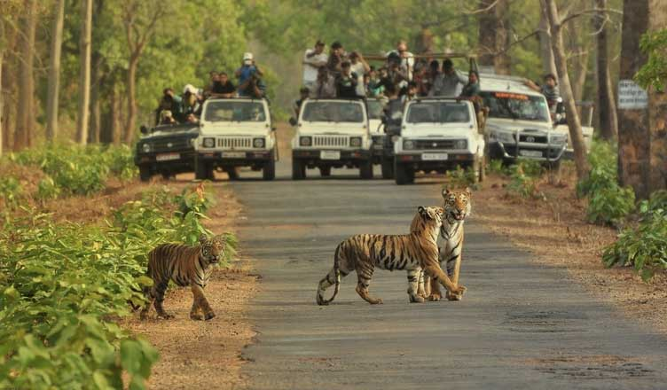

Bannerghatta Biological Park
National park in Bengaluru
Bannerghatta National Park is a national park in India, located near Bangalore, Karnataka. It was founded in 1970 and declared as a national park in 1974. In 2002, a small portion of the park became a zoological garden, the Bannerghatta Biological Park.
1 Zoo : 09:30 AM to 5:00 PM
2 Grand Safari (Tiger , Lion, Bear & Herbivore safari): 10:00 AM to 4:30 PM
3 Butterfly Park: 09:30 AM to 5:00 PM
4 Boating: 09:30 AM to 5:00 PM